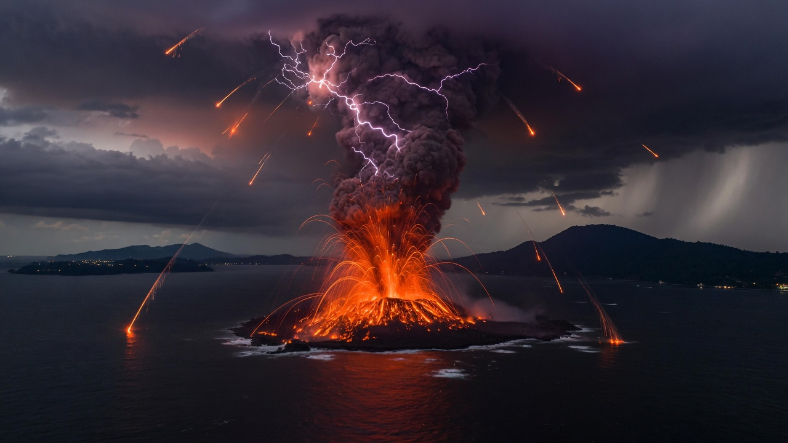

Anak Krakatau went Red. MAGMA VONA 2026-09-05 02:00Z. BMKG tracked ash to 50,000 ft on the Sumatra side and 20,000 ft toward Java. Soekarno-Hatta closed. Reuters counted hundreds of flights. BNPB: no tsunami imminent.
Same weekend: Sinabung broke a four-year quiet (Level III), Semeru kept its daily rhythm, Ibu and Ili Lewotolok pulsed, Lewotobi Laki-laki stayed on watch. PVMBG: separate magma kitchens. Not one pipe.
BMKG + VAAC Darwin / Himawari-9. Tropopause-class column. Aviation-critical, not a Strombolian backyard fountain.
Official notice 2026-09-05 02:00 UTC. Ground observer often could not see the high cloud. Satellite saw what the island could not.
Ibu, Semeru, Lewotobi Laki-laki, Ili Lewotolok, Anak Krakatau, Sinabung. Rita Susilawati (PVMBG): “dapurnya sendiri-sendiri.”
| Tool | Before | Now | What it said about this event |
|---|---|---|---|
| geox_map | NameError _map_layers_list | OK · 4 layers · Sunda Strait bbox | Coastline + SE Asia maritime context for 104.5–106.5E / 7–5.5S. |
| geox_deep_time | unexpected kwargs / empty | OK · tectonic_context | Anak Krakatau (−6.102, 105.423) sits on the Sunda Arc. Overriding: Eurasia / Sunda Block. Subducting: Indo-Australian. Trench: Sunda. Regime: oceanic-continental, oblique in Sumatra, frontal in Java. |
| geox_basin | ok:true + empty (schema lie) | PASS · Malay Basin evidence | Back-arc of this same trench. Late Eocene–Oligocene failed rift. >14 km fill. Groups J/I/K ~60% of resources (Madon 2021). The volcanoes are the arc. The oil is the sag behind it. |
| geox_geomechanics | unreachable / hard fail | PASS · Physics9 AAA | Textbook andesite cell ρ=2650, Vp=5500, Vs=3200 → K=44.0 GPa, G=27.1 GPa, E=67.5 GPa, ν=0.244, Vp/Vs=1.72. DERIVED, not a measured Anak sample. |
| Volcano | Coords | Status | Pulse | Label |
|---|---|---|---|---|
| Anak Krakatau | 6.10°S 105.42°E | VONA RED 5 Sep | Ash 20–50 kft; Soetta closed; 2018 tsunami scar still governs the exclusion mind | OBS MAGMA/BMKG/Reuters |
| Sinabung | 3.17°N 98.39°E | Level III Siaga | 31 Aug 10:17 WIB, 3,500 m column, first since 2021/Level II since May 2023 | OBS PVMBG |
| Semeru | 8.11°S 112.92°E | Level III | 6 Sep 07:51 WIB, ~1,000 m; 1,808 eruptions YTD 2026 (Kompas) | OBS MAGMA |
| Ibu (Halmahera) | 1.49°N 127.63°E | Level II | Repeated 6 Sep; 22:48 WIT column ~500 m; 1,492 eruptions YTD | OBS MAGMA |
| Ili Lewotolok | 8.27°S 123.51°E | Level II | 6 Sep 06:41 WITA, 600 m; exclusion 2 km + 3 km SE sector | OBS MAGMA |
| Lewotobi Laki-laki | 8.36°S 122.78°E | Level III | On the 31 Aug six; 5 km exclusion still live | OBS PVMBG |
PVMBG + Daryono: no shared magma plumbing. Simultaneous eruptions are what 127 active volcanoes on one trench look like when several systems independently reach critical fluid pressure. Correlation ≠ coupling.
50,000 ft ash in the Sunda Strait sits on Jakarta–Singapore–Jeddah–Australia trunks. Soetta halt, 209–301 flights depending on the hour, SIA cancelled the day. That is supply-chain, not lava.
Same Sunda stress family, opposite kinematic job: the arc consumes slab, the back-arc stored 40% of Malaysia’s hydrocarbons (Madon 2021). Elevated arc activity is not a drill trigger. It is a reminder the trench is not a museum.
Sv = 211.9 MPa · σv' = 131.9 MPa · μ=0.6 · n²=3.12
Normal-faulting Shmin ≥ 122 MPa · Reverse SHmax ≤ 491 MPa.
This is a textbook Andersonian bound, not an in-situ stress measurement at Krakatau. Useful as a scale: an 8 km column of volcanic crust is already in the 200 MPa vertical-stress club.